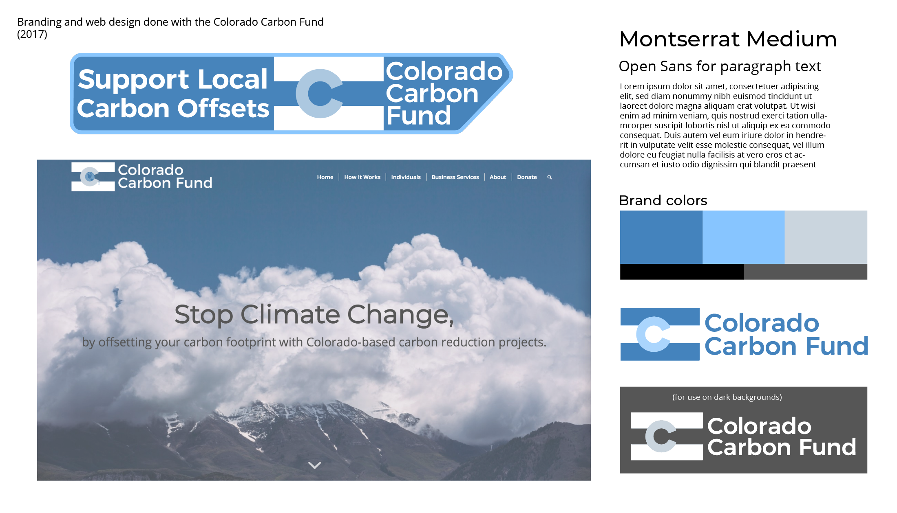

Client: Colorado Carbon Fund
Graphic Design, Web Design, Branding
Rebrand: I defined new colors, fonts, and photographic art direction which both dignified and refreshed the old branding.
Website: I designed a new static Wordpress site for the Colorado Carbon Fund and ported over all the content from their old Wix website. The old website wasn’t responsive, had a counterintuitive sitemap, and contained links to competitors’ carbon footprint calculators. The new site is responsive, intuitive, and features an embedded custom carbon calculator.
